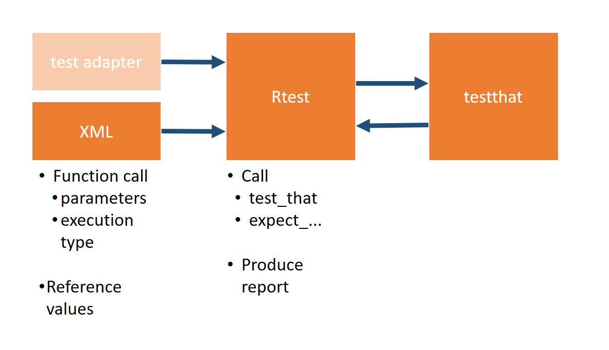
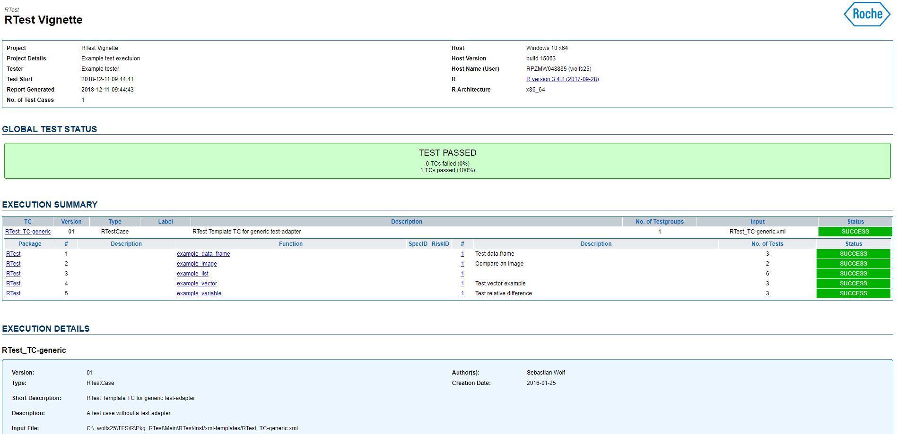

The RTest package shall allow you to write human readible test cases. If you wonder why to build human readible tests, you can read this blog entry.
Our package RTest is basically a wrapper around testthat functions. Instead of comparing two values by a function call, we will show you how to compare two values by an XML file. As a general principle, you can say, that you define the test case inside an XML file + a test-adapter R script. The test-adapter contains the “How to?” test, meaning the cuntion call and what to take out of the XML file. You do not neccesarily have to provide a test-adapter. RTest also provides you with a “generic” test adapter that will check the values inside your XML file and see what you want to test.
The XML file contains the parameters and reference values and the function you want to call. The function name can be the package function name or the test-adapter method name. All three combined make the call
reference %>% compare_to( function_call ( parameters ) )The compare_to part is what RTest provides you with. The XML is handed over to the RTest package, that calls testthat and produces a nice report. Please see the figure below for the general principle.

This is a step by step guide how to build a test case. The final test case can be found under: RTest_TC-generic.xml
To show you how you can test some simple functions, a test collection was prepared as an example. We want to test 5 functions:
example_data_frame - Adding up rowwise and multiplying the values by a parameter called mult.example_image - Returning the Roche Logo as a PNG by returning a pathexample_list - Creates a list with one element called by the name_1 input parameter with the value “VALUE1”, an element valled “NAME2” with the value of the value_2 parameter and an element called “data.frame” with a two column data.frameexample_vector - Returns a vector containing the word “RTest” rep timesexample_value - Returns (x-y)/(x)
These functions are set up within the RTest package and you can directly call them from within the package.
First an empty test case in RTest contains a synopsis and input-data:
<?xml version="1.0" encoding="UTF-8"?>
<RTestCase
xmlns:xsi="http://www.w3.org/2001/XMLSchema-instance"
xsi:noNamespaceSchemaLocation="../xsd/RTest.xsd">
<ID>RTest_TC-01</ID>
<synopsis>
<version>01</version>
<author>Matthias Pfeifer</author>
<short-description>RTest Template TC</short-description>
<description>
<![CDATA[
Extended Description of the test case allowing also <some><special>/characters
]]>
</description>
<creation-date>2016-01-25</creation-date>
<change-history>
<change author="Matthias Pfeifer" date="2016-01-25">Initial Version</change>
</change-history>
</synopsis>
<input-data>
<data.frame name="test01">
<col-defs>
<coldef name="x" type="numeric" />
<coldef name="y" type="numeric" />
</col-defs>
<row>
<cell>1</cell>
<cell>2</cell>
</row>
<row>
<cell>1</cell>
<cell>2</cell>
</row>
</data.frame>
</input-data>
<tests>
...
</tests>
</RTestCase>
As you can see, the XML file that we’ll create links to the RTest.xsd. This allows to pre-write certain parts of the document and define structures, like “What does a data.frame look like?”. To visualize XML and XSD we highly recommend using Altova XML Spy. The input data output we created here can be generated using:
my_data <- data.frame(x=c(1,2),y=c(1,2))
RTest::xmlWriteData_data.frame("data.frame",my_data,"test01")## <data.frame name="test01">
## <col-defs>
## <coldef name="x" type="numeric" />
## <coldef name="y" type="numeric" />
## </col-defs>
## <row name="1">
## <cell>1</cell>
## <cell>1</cell>
## </row>
## <row name="2">
## <cell>2</cell>
## <cell>2</cell>
## </row>
## </data.frame>To test the example_data_frame we want to use the input-data part test01 as an input. Therefore we define the test case as:
<example_data_frame test-desc="Test data.frame">
<params>
<RTestData_input_data param="data" name="test01" />
<mult value="1" type="numeric" />
</params>
...
</example_data_frame>
You can see that the RTestData_input_data grabs the test01 element from input-data and hands it over to the data argument of example_data_frame. Additionally we create a parameter called mult with value 1.
Now we want to define a reference data.frame inside the XML and tell that the function shall be executed silently:
<example_data_frame test-desc="Test data.frame">
<params>
<RTestData_input_data param="data" name="test01" />
<mult value="1" type="numeric" />
</params>
<reference>
<col-defs>
<coldef name="x" type="numeric" />
<coldef name="y" type="numeric" />
<coldef name="sum" type="numeric" />
</col-defs>
<row>
<cell>1</cell>
<cell>2</cell>
<cell>3</cell>
</row>
<row>
<cell>1</cell>
<cell>2</cell>
<cell>3</cell>
</row>
</reference>
<testspec>
<execution execution-type="silent" />
<return-value compare-type="equal" diff-type="absolute"
tolerance="0.001" />
</testspec>
</example_data_frame>It shall be clear, that the reference tag marks what the function call shall be compared against. The testspec tag shows
execution how the execution of example_data_frame shall take place (silent, message, warning, error)You can check all other definitions of the testspec inside the RTest.xsd file that can be found in file.path(find.package("RTest"),"xsd/RTest.xsd")
We will continue writing the function calls inside the XML after the same principe. You can check out the whole test in RTest_TC-generic.xml
To execute the test cases you just need to call the RTest included function RTest.execute. It let’s you choose where your test cases are located and what shall be the name of the output file. If we now want to perform this task for our described 5 Test cases we need to run:
library(magrittr)
library(RTest)
RTest::RTest.execute(
testcase.directory = list.dirs(find.package('RTest'),recursive=TRUE) %>%
grep(pattern="xml-templates",value=TRUE),
open=FALSE,
f.pattern = "RTest_TC-generic.xml"
)## 1 files found in input directory:
## [1] "RTest_TC-generic.xml"
##
## Import TC file 'C:/Programme_2/ROCHE-R/R/R-3.4.2/package-repository/RTest/xml-templates/RTest_TC-generic.xml'
##
## Create new TC using adapter definition 'RTestCase'.Test Case
## Object of class ' RTestCase '
## @ID : RTest_TC-generic
## @tc.type : RTestCase
## @synopsis :
## $version : 01
## $author : Sebastian Wolf
## $short-description : RTest Template TC for generic test-adapter
## $description : A test case without a test adapter
## $label :
## $creation-date : 2018-12-11
## $change-history :
## 2018-12-11 , Sebastian Wolf :
## Initial Version
##
## @xml.fPath : C:/Programme_2/ROCHE-R/R/R-3.4.2/package-repository/RTest/xml-templates/RTest_TC-generic.xml
## @xml.root : XMLNode
##
## @input.data :
## test01 : 'data.frame': 2 obs. of 2 variables:
## $ x: num 1 1
## $ y: num 2 2
##
## @test.for : NA
## @test.result : NA
##
## @tests :
## RTest : List of 5
## $ :List of 1
## ..$ example_data_frame:List of 1
## .. ..$ :List of 16
## .. .. ..$ pkg : chr "RTest"
## .. .. ..$ pgk-iter : num 1
## .. .. ..$ func : chr "example_data_frame"
## .. .. ..$ func-iter : num 1
## .. .. ..$ test-code : chr "RTest::example_data_frame"
## .. .. ..$ test-adapter: chr "RTestCase"
## .. .. ..$ test-func : chr "test.RTest.example_data_frame"
## .. .. ..$ pkg-desc : chr ""
## .. .. ..$ func-desc : chr "Test data.frame"
## .. .. ..$ xpath : chr "//RTestCase/tests/RTest[1]/example_data_frame[1]"
## .. .. ..$ reporter : logi NA
## .. .. ..$ result : logi NA
## .. .. ..$ cache : logi NA
## .. .. ..$ execresid : logi NA
## .. .. ..$ specid : chr ""
## .. .. ..$ riskid : chr ""
## $ :List of 1
## ..$ example_image:List of 1
## .. ..$ :List of 16
## .. .. ..$ pkg : chr "RTest"
## .. .. ..$ pgk-iter : num 2
## .. .. ..$ func : chr "example_image"
## .. .. ..$ func-iter : num 1
## .. .. ..$ test-code : chr "RTest::example_image"
## .. .. ..$ test-adapter: chr "RTestCase"
## .. .. ..$ test-func : chr "test.RTest.example_image"
## .. .. ..$ pkg-desc : chr ""
## .. .. ..$ func-desc : chr "Compare an image"
## .. .. ..$ xpath : chr "//RTestCase/tests/RTest[2]/example_image[1]"
## .. .. ..$ reporter : logi NA
## .. .. ..$ result : logi NA
## .. .. ..$ cache : logi NA
## .. .. ..$ execresid : logi NA
## .. .. ..$ specid : chr ""
## .. .. ..$ riskid : chr ""
## $ :List of 1
## ..$ example_list:List of 1
## .. ..$ :List of 16
## .. .. ..$ pkg : chr "RTest"
## .. .. ..$ pgk-iter : num 3
## .. .. ..$ func : chr "example_list"
## .. .. ..$ func-iter : num 1
## .. .. ..$ test-code : chr "RTest::example_list"
## .. .. ..$ test-adapter: chr "RTestCase"
## .. .. ..$ test-func : chr "test.RTest.example_list"
## .. .. ..$ pkg-desc : chr ""
## .. .. ..$ func-desc : chr ""
## .. .. ..$ xpath : chr "//RTestCase/tests/RTest[3]/example_list[1]"
## .. .. ..$ reporter : logi NA
## .. .. ..$ result : logi NA
## .. .. ..$ cache : logi NA
## .. .. ..$ execresid : logi NA
## .. .. ..$ specid : chr ""
## .. .. ..$ riskid : chr ""
## $ :List of 1
## ..$ example_vector:List of 1
## .. ..$ :List of 16
## .. .. ..$ pkg : chr "RTest"
## .. .. ..$ pgk-iter : num 4
## .. .. ..$ func : chr "example_vector"
## .. .. ..$ func-iter : num 1
## .. .. ..$ test-code : chr "RTest::example_vector"
## .. .. ..$ test-adapter: chr "RTestCase"
## .. .. ..$ test-func : chr "test.RTest.example_vector"
## .. .. ..$ pkg-desc : chr ""
## .. .. ..$ func-desc : chr "Test vector example"
## .. .. ..$ xpath : chr "//RTestCase/tests/RTest[4]/example_vector[1]"
## .. .. ..$ reporter : logi NA
## .. .. ..$ result : logi NA
## .. .. ..$ cache : logi NA
## .. .. ..$ execresid : logi NA
## .. .. ..$ specid : chr ""
## .. .. ..$ riskid : chr ""
## $ :List of 1
## ..$ example_variable:List of 1
## .. ..$ :List of 16
## .. .. ..$ pkg : chr "RTest"
## .. .. ..$ pgk-iter : num 5
## .. .. ..$ func : chr "example_variable"
## .. .. ..$ func-iter : num 1
## .. .. ..$ test-code : chr "RTest::example_variable"
## .. .. ..$ test-adapter: chr "RTestCase"
## .. .. ..$ test-func : chr "test.RTest.example_variable"
## .. .. ..$ pkg-desc : chr ""
## .. .. ..$ func-desc : chr "Test relative difference"
## .. .. ..$ xpath : chr "//RTestCase/tests/RTest[5]/example_variable[1]"
## .. .. ..$ reporter : logi NA
## .. .. ..$ result : logi NA
## .. .. ..$ cache : logi NA
## .. .. ..$ execresid : logi NA
## .. .. ..$ specid : chr ""
## .. .. ..$ riskid : chr ""
##
##
## Execute following test cases:
## [1] "RTest_TC-generic"
##
## ##### TEST CASE 'RTest_TC-generic'
##
## Test for: 'RTest', 'RTest', 'RTest', 'RTest', 'RTest'
##
## Run test(s) for 'RTest'
## Test 'RTest::example_data_frame' ... data.frame: 2 x 3 ... success
## Test 'RTest::example_image' ... success
## Test 'RTest::example_list' ... data.frame: 2 x 2 ... success
## Test 'RTest::example_vector' ... success
## Test 'RTest::example_variable' ... success
##
## Write HTML summary for following test cases:
## [1] "RTest_TC-generic"
##
## Write details for 'RTest::example_data_frame'
## Execute function silently. (example_data_frame)
## 0%
## Checking output class and reference class. Check return value (variable).
## 0%
## Check return value (data.frame).
## 0%
## Write details for 'RTest::example_image'
## Execute function silently. (example_image)
## 0%
## Check return image.
## 0%
## Write details for 'RTest::example_list'
## Execute function silently. (example_list)
## 0%
## Checking output class and reference class. Check return value (variable).
## 0%
## Check return value (list).
## 0%
## -- List entry 'myname' (variable): Check return value (variable).
## 0%
## -- List entry 'NAME2' (variable): Check return value (variable).
## 0%
## -- List entry 'data.frame' (data.frame): Check return value (data.frame).
## 0%
## Write details for 'RTest::example_vector'
## Execute function silently. (example_vector)
## 0%
## Checking output class and reference class. Check return value (variable).
## 0%
## Check return value (variable).
## 0%
## Write details for 'RTest::example_variable'
## Execute function silently. (example_variable)
## 0%
## Checking output class and reference class. Check return value (variable).
## 0%
## Check return value (variable).
## 0%
##
## HTML summary written to file 'C:\Users\wolfs25\AppData\Local\Temp\RtmpMHE8TL\file1e6cd101d99.html'.And you are done and will get a nice output.

DONE!